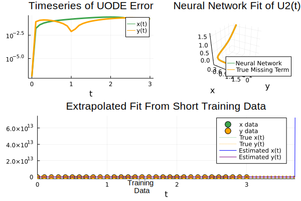

## Environment and packages
cd(@__DIR__)
using Pkg
Pkg.activate("lotka")Applying Universal Differential Equations for Recovering Unknown Mechanism

Sample code is modified from ChrisRackauckas/universsal_differential_equations. This is the part of the work of
Rackauckas, Christopher, et al. “Universal differential equations for scientific machine learning.” arXiv preprint arXiv:2001.04385 (2020).
Activate the environment
Pkg.instantiate() # This step will take a while for numerous packagesImport packages
- When importing multiple packages, this requires precompilation that takes some time.
using OrdinaryDiffEq
using ModelingToolkit
using DataDrivenDiffEq
using LinearAlgebra, ComponentArrays
using Optimization, OptimizationOptimisers, OptimizationOptimJL #OptimizationFlux for ADAM and OptimizationOptimJL for BFGS
using DiffEqSensitivity
using Lux
using Plots
gr()
using Statistics
# Set a random seed for reproduceable behaviour
using Random
rng = Random.default_rng()
Random.seed!(1234);Building ODE model: Ground truth model
For simplicity, we use Lotka-Volterra system as an example
\[\begin{align} \dot{x} &= \alpha x - \beta xy\\ \dot{y} &= \gamma xy- \delta y \end{align}\]
where \(\alpha, \beta, \gamma\), and \(\delta\) are positive real parameters
## Data generation
function lotka!(du, u, p, t)
α, β, γ, δ = p
du[1] = α*u[1] - β*u[2]*u[1]
du[2] = γ*u[1]*u[2] - δ*u[2]
endlotka! (generic function with 1 method)# Define the experimental parameter
tspan = (0.0,3.0)
u0 = [0.44249296,4.6280594]
p_ = [1.3, 0.9, 0.8, 1.8]4-element Vector{Float64}:
1.3
0.9
0.8
1.8Solving ODE
Vern7is used for non-stiff problems. Numerous solvers can be found on DifferentialEquations.jl’s doc
# Solve
prob = ODEProblem(lotka!, u0,tspan, p_)
solution = solve(prob, Vern7(), abstol=1e-12, reltol=1e-12, saveat = 0.1)retcode: Success
Interpolation: 1st order linear
t: 31-element Vector{Float64}:
0.0
0.1
0.2
0.3
0.4
0.5
0.6
0.7
0.8
0.9
1.0
1.1
1.2
⋮
1.9
2.0
2.1
2.2
2.3
2.4
2.5
2.6
2.7
2.8
2.9
3.0
u: 31-element Vector{Vector{Float64}}:
[0.44249296, 4.6280594]
[0.34212452862086234, 3.98764547181634]
[0.2793966078254349, 3.4139529441083147]
[0.2394952228707143, 2.9110318130603883]
[0.21413620714095402, 2.4758280205419836]
[0.19854852659179129, 2.1022922430734137]
[0.18991187927524103, 1.7834096349202704]
[0.18652973211225643, 1.5121821427640152]
[0.18737918127509637, 1.2820806846455604]
[0.1918587411736629, 1.087227597605956]
[0.1996432344128222, 0.9224424008592909]
[0.2105985019620811, 0.7832199752377471]
[0.22473063540355143, 0.6656774980182895]
⋮
[0.4333056937367298, 0.22471175932636067]
[0.48425346211989406, 0.1947029152564331]
[0.5425361548950363, 0.16943926722620506]
[0.6091040110729008, 0.14819092695665834]
[0.6850407509453579, 0.13034710141497852]
[0.7715795653361799, 0.11539841080610512]
[0.8701212001899306, 0.10292221843899205]
[0.9822541897624152, 0.09257065810821445]
[1.1097772412678872, 0.08406114122763123]
[1.2547236687788759, 0.07716924328704818]
[1.419387582491876, 0.07172402271816045]
[1.606351205697802, 0.06760604257226555]Data processing
# Ideal data
X = Array(solution)
t = solution.t
DX = Array(solution(solution.t, Val{1}))
full_problem = DataDrivenProblem(X, t = t, DX = DX)
# Add noise in terms of the mean
x̄ = mean(X, dims = 2)
noise_magnitude = 5e-3
Xₙ = X .+ (noise_magnitude*x̄) .* randn(eltype(X), size(X))2×31 Matrix{Float64}:
0.442554 0.346422 0.283868 0.239053 … 1.25327 1.42578 1.60411
4.62367 3.98581 3.41621 2.91364 0.0747481 0.0616359 0.0619753Data Visualization
plot(solution, alpha = 0.75, color = :black, label = ["True Data" nothing])
scatter!(t, transpose(Xₙ), color = :red, label = ["Noisy Data" nothing])Build surrogate model
Suppose we only know part of the Lotka-Voltera model, and use CNN to surrogate the unknown part
\[\begin{align} \dot{x} &= \theta_1 x + U_1(\theta_3, x, y)\\ \dot{y} &= -\theta_2 y + U_2(\theta_3..., x, y) \end{align}\]
## Define the network
# Gaussian RBF as activation
rbf(x) = exp.(-(x.^2))
# Multilayer FeedForward
U = Lux.Chain(
Lux.Dense(2,5,rbf), Lux.Dense(5,5, rbf), Lux.Dense(5,5, rbf), Lux.Dense(5,2)
)
# Get the initial parameters and state variables of the model
p, st = Lux.setup(rng, U)
# Define the hybrid model
function ude_dynamics!(du,u, p, t, p_true)
û = U(u, p, st)[1] # Network prediction
du[1] = p_true[1]*u[1] + û[1]
du[2] = -p_true[4]*u[2] + û[2]
endude_dynamics! (generic function with 1 method)# Closure with the known parameter
nn_dynamics!(du,u,p,t) = ude_dynamics!(du,u,p,t,p_)
# Define the problem (Fix: https://discourse.julialang.org/t/issue-with-ude-repository-lv-scenario-1/88618/5)
prob_nn = ODEProblem{true, SciMLBase.FullSpecialize}(nn_dynamics!,Xₙ[:, 1], tspan, p)ODEProblem with uType Vector{Float64} and tType Float64. In-place: true timespan: (0.0, 3.0) u0: 2-element Vector{Float64}: 0.4425543496585194 4.6236666047953
Training Setting
## Function to train the network
# Define a predictor
function predict(θ, X = Xₙ[:,1], T = t)
_prob = remake(prob_nn, u0 = X, tspan = (T[1], T[end]), p = θ)
Array(solve(_prob, Vern7(), saveat = T,
abstol=1e-6, reltol=1e-6,
sensealg = ForwardDiffSensitivity()
))
end
# Simple L2 loss
function loss(θ)
X̂ = predict(θ)
sum(abs2, Xₙ .- X̂)
end
# Container to track the losses
losses = Float64[]
callback = function (p, l)
push!(losses, l)
if length(losses)%50==0
println("Current loss after $(length(losses)) iterations: $(losses[end])")
end
return false
end#19 (generic function with 1 method)Training
The training is splitted to two steps: 1. ADAM: for better convergence 2. BFGS: get better position
adtype = Optimization.AutoZygote()
optf = Optimization.OptimizationFunction((x,p)->loss(x), adtype)
optprob = Optimization.OptimizationProblem(optf, ComponentVector{Float64}(p))
res1 = Optimization.solve(optprob, ADAM(0.1), callback=callback, maxiters = 200)
@info "Training loss after $(length(losses)) iterations: $(losses[end])"
# Train with BFGS
@time optprob2 = Optimization.OptimizationProblem(optf, res1.minimizer)
@time res2 = Optimization.solve(optprob2, Optim.BFGS(initial_stepnorm=0.01), callback=callback, maxiters = 3000)
@info "Final training loss after $(length(losses)) iterations: $(losses[end])"Current loss after 50 iterations: 3.469528000842328
Current loss after 100 iterations: 1.6085778580005679
Current loss after 150 iterations: 1.0932233615139908
Current loss after 200 iterations: 0.9008213085586918
0.002767 seconds (912 allocations: 55.714 KiB, 97.56% compilation time)┌ Info: Training loss after 201 iterations: 0.9008213085586918
└ @ Main In[104]:6Current loss after 250 iterations: 0.00835701277177789
Current loss after 300 iterations: 0.0012008428507987853
Current loss after 350 iterations: 0.0007589772027163713
Current loss after 400 iterations: 0.0007090003812023018
Current loss after 450 iterations: 0.0006963845360709188
Current loss after 500 iterations: 0.0006879639315406285
Current loss after 550 iterations: 0.0006737836722368439
Current loss after 600 iterations: 0.0006610212120100604
Current loss after 650 iterations: 0.0006304002713236008
Current loss after 700 iterations: 0.0005887565584171636
Current loss after 750 iterations: 0.0005830120824833022
Current loss after 800 iterations: 0.000567571010413902
Current loss after 850 iterations: 0.0005601012883909123
Current loss after 900 iterations: 0.0005481287746361439
Current loss after 950 iterations: 0.0005426657868937582
Current loss after 1000 iterations: 0.0005389589538206719
Current loss after 1050 iterations: 0.0005378070015787143
Current loss after 1100 iterations: 0.00053260691150804
Current loss after 1150 iterations: 0.0005247085298999025
Current loss after 1200 iterations: 0.0005222863437639172
Current loss after 1250 iterations: 0.000514100635755448
Current loss after 1300 iterations: 0.0005109459260636017
Current loss after 1350 iterations: 0.0005079065846714043
Current loss after 1400 iterations: 0.0005033748616302439
Current loss after 1450 iterations: 0.0004994904499349531
Current loss after 1500 iterations: 0.0004966601640042935
Current loss after 1550 iterations: 0.0004923552185348715
Current loss after 1600 iterations: 0.0004889445340668124
Current loss after 1650 iterations: 0.0004805067981551289
Current loss after 1700 iterations: 0.0004766270876236727
Current loss after 1750 iterations: 0.0004669801522855263
Current loss after 1800 iterations: 0.00046399927019063553
Current loss after 1850 iterations: 0.00045877442467472985
Current loss after 1900 iterations: 0.0004531416076322169
Current loss after 1950 iterations: 0.00045018827875346385
Current loss after 2000 iterations: 0.00044866125441227667
Current loss after 2050 iterations: 0.0004385317791146122
Current loss after 2100 iterations: 0.00043123783494311606
Current loss after 2150 iterations: 0.00043041897973958385
Current loss after 2200 iterations: 0.0004284921491458308
Current loss after 2250 iterations: 0.0004278384777668959
Current loss after 2300 iterations: 0.0004242955366192935
Current loss after 2350 iterations: 0.0004233850019719135
Current loss after 2400 iterations: 0.00042183393350811633
Current loss after 2450 iterations: 0.0004212106099017218
Current loss after 2500 iterations: 0.0004190375099401659
Current loss after 2550 iterations: 0.00041641136591938967
Current loss after 2600 iterations: 0.00041338080498632866
Current loss after 2650 iterations: 0.00041134025280670385
Current loss after 2700 iterations: 0.00040197161275078435
Current loss after 2750 iterations: 0.00039949066296698606
Current loss after 2800 iterations: 0.000393878651282027
Current loss after 2850 iterations: 0.00039216371202708785
Current loss after 2900 iterations: 0.0003874546834286143
Current loss after 2950 iterations: 0.00037598086076886123
Current loss after 3000 iterations: 0.0003737354834934274
Current loss after 3050 iterations: 0.00037237715575335565
Current loss after 3100 iterations: 0.000367860777556065
Current loss after 3150 iterations: 0.0003606938309170762
Current loss after 3200 iterations: 0.0003567357981520652
73.392067 seconds (623.24 M allocations: 115.171 GiB, 15.35% gc time, 0.22% compilation time)┌ Info: Final training loss after 3202 iterations: 0.0003567221878942813
└ @ Main In[104]:10Visualize loss
# Plot the losses
pl_losses = plot(1:200, losses[1:200], yaxis = :log10, xaxis = :log10, xlabel = "Iterations", ylabel = "Loss", label = "ADAM", color = :blue)
plot!(201:length(losses), losses[201:end], yaxis = :log10, xaxis = :log10, xlabel = "Iterations", ylabel = "Loss", label = "BFGS", color = :red)# Rename the best candidate
p_trained = res2.minimizer;## Analysis of the trained network
# Plot the data and the approximation
ts = first(solution.t):mean(diff(solution.t))/2:last(solution.t)
X̂ = predict(p_trained, Xₙ[:,1], ts)
# Trained on noisy data vs real solution
pl_trajectory = plot(ts, transpose(X̂), xlabel = "t", ylabel ="x(t), y(t)", color = :red, label = ["UDE Approximation" nothing])
scatter!(solution.t, transpose(Xₙ), color = :black, label = ["Measurements" nothing])
# Ideal unknown interactions of the predictor
Ȳ = [-p_[2]*(X̂[1,:].*X̂[2,:])';p_[3]*(X̂[1,:].*X̂[2,:])']
# Neural network guess
Ŷ = U(X̂,p_trained,st)[1]
pl_reconstruction = plot(ts, transpose(Ŷ), xlabel = "t", ylabel ="U(x,y)", color = :red, label = ["UDE Approximation" nothing])
plot!(ts, transpose(Ȳ), color = :black, label = ["True Interaction" nothing])
# Plot the error
pl_reconstruction_error = plot(ts, norm.(eachcol(Ȳ-Ŷ)), yaxis = :log, xlabel = "t", ylabel = "L2-Error", label = nothing, color = :red)
pl_missing = plot(pl_reconstruction, pl_reconstruction_error, layout = (2,1))
pl_overall = plot(pl_trajectory, pl_missing)
## Symbolic regression via sparse regression ( SINDy based )Symbolic Regression
# Create a Basis
@variables u[1:2]
# Generate the basis functions, multivariate polynomials up to deg 5
# and sine
b = [polynomial_basis(u, 5); sin.(u)]
basis = Basis(b,u);
# Create the thresholds which should be used in the search process
λ = exp10.(-3:0.01:5)
# Create an optimizer for the SINDy problem
opt = STLSQ(λ)
# Define different problems for the recovery
ideal_problem = DirectDataDrivenProblem(X̂, Ȳ)
nn_problem = DirectDataDrivenProblem(X̂, Ŷ)
# Test on ideal derivative data for unknown function ( not available )
println("Sparse regression")
full_res = solve(full_problem, basis, opt, maxiter = 10000, progress = true)
ideal_res = solve(ideal_problem, basis, opt, maxiter = 10000, progress = true)
nn_res = solve(nn_problem, basis, opt, maxiter = 10000, progress = true, sampler = DataSampler(Batcher(n = 4, shuffle = true)))
# Store the results
results = [full_res; ideal_res; nn_res]
# Show the results
map(println, results)
# Show the results
map(println ∘ result, results)
# Show the identified parameters
map(println ∘ parameter_map, results)
# Define the recovered, hyrid model
function recovered_dynamics!(du,u, p, t)
û = nn_res(u, p) # Network prediction
du[1] = p_[1]*u[1] + û[1]
du[2] = -p_[4]*u[2] + û[2]
end
estimation_prob = ODEProblem(recovered_dynamics!, u0, tspan, parameters(nn_res))
estimate = solve(estimation_prob, Tsit5(), saveat = solution.t)Sparse regressionSTLSQ 13%|█████▊ | ETA: 0:00:01
Threshold: 0.01
Best Objective: 0.0
Best Sparsity: 23.0
Current Objective: 0.0
Current Sparsity: 23.0Linear Solution with 2 equations and 20 parameters.
Returncode: solved
L₂ Norm error : [31.995291148539735, 1.2046710278865183]
AIC : [147.43325095127574, 45.77240223675897]
R² : [-1.2429510122420595, 0.990118386736816]
Linear Solution with 2 equations and 2 parameters.
Returncode: solved
L₂ Norm error : [1.3211879418496438e-31, 2.3688938315963e-32]
AIC : [-4333.198002294267, -4438.038291907829]
R² : [1.0, 1.0]
Linear Solution with 2 equations and 12 parameters.
Returncode: solved
L₂ Norm error : [2.3343801269794584, 0.44274177996973096]
AIC : [75.71252952361633, -25.70088266885905]
R² : [0.664896276909329, 0.9252179602574171]
Model ##Basis#1046 with 2 equations
States : u[1] u[2]
Parameters : 20
Independent variable: t
Equations
Differential(t)(u[1]) = p₁ + p₁₀*(u[2]^2) + p₃*(u[1]^2) + p₁₇*sin(u[1]) + p₂*u[1] + p₄*(u[1]^3) + p₅*u[2] + p₁₂*(u[1]^2)*(u[2]^2) + p₁₅*(u[1]^2)*(u[2]^3) + p₁₃*(u[1]^3)*(u[2]^2) + p₁₁*(u[2]^2)*u[1] + p₁₄*(u[2]^3)*u[1] + p₇*(u[1]^2)*u[2] + p₈*(u[1]^3)*u[2] + p₉*(u[1]^4)*u[2] + p₁₆*(u[2]^4)*u[1] + p₆*u[1]*u[2]
Differential(t)(u[2]) = p₁₉*(u[1]^2)*u[2] + p₂₀*(u[1]^3)*u[2] + p₁₈*u[1]*u[2]
Model ##Basis#1049 with 2 equations
States : u[1] u[2]
Parameters : p₁ p₂
Independent variable: t
Equations
φ₁ = p₁*u[1]*u[2]
φ₂ = p₂*u[1]*u[2]
Model ##Basis#1052 with 2 equations
States : u[1] u[2]
Parameters : 12
Independent variable: t
Equations
φ₁ = p₁*(u[1]^3)*u[2] + p₂*(u[1]^4)*u[2]
φ₂ = p₃*u[1] + p₄*(u[1]^2) + p₅*(u[1]^3) + p₁₀*(u[1]^2)*(u[2]^2) + p₁₁*(u[1]^3)*(u[2]^2) + p₁₂*(u[1]^2)*(u[2]^3) + p₆*u[1]*u[2] + p₇*(u[1]^2)*u[2] + p₈*(u[1]^3)*u[2] + p₉*(u[1]^4)*u[2]
Pair{Sym{Real, Base.ImmutableDict{DataType, Any}}, Float64}[p₁ => 88.0, p₂ => 90.1, p₃ => 45.4, p₄ => 27.6, p₅ => 73.5, p₆ => -1107.4, p₇ => -2835.6, p₈ => 27.9, p₉ => 25.07, p₁₀ => 16.9, p₁₁ => -472.5, p₁₂ => 6115.8, p₁₃ => -117.4, p₁₄ => 22.016, p₁₅ => -659.7, p₁₆ => -25.4, p₁₇ => 62.5, p₁₈ => -13.9, p₁₉ => 31.25, p₂₀ => -15.5]
Pair{Sym{Real, Base.ImmutableDict{DataType, Any}}, Float64}[p₁ => -0.9, p₂ => 0.8]
Pair{Sym{Real, Base.ImmutableDict{DataType, Any}}, Float64}[p₁ => -6.6, p₂ => 4.4, p₃ => -9.3, p₄ => 16.9, p₅ => -5.7, p₆ => -6.9, p₇ => 137.21, p₈ => -221.24, p₉ => 73.6, p₁₀ => -31.08, p₁₁ => 8.16, p₁₂ => 4.3]retcode: Success
Interpolation: 1st order linear
t: 31-element Vector{Float64}:
0.0
0.1
0.2
0.3
0.4
0.5
0.6
0.7
0.8
0.9
1.0
1.1
1.2
⋮
1.9
2.0
2.1
2.2
2.3
2.4
2.5
2.6
2.7
2.8
2.9
3.0
u: 31-element Vector{Vector{Float64}}:
[0.44249296, 4.6280594]
[0.3627445443308102, 3.9587001242732978]
[0.3314229485874231, 3.328966119978393]
[0.3195350372465093, 2.8042757858839753]
[0.31754887251689373, 2.3961622087687]
[0.32133497307349757, 2.086000709549741]
[0.3287978586587243, 1.8510046953171453]
[0.33869695698345803, 1.6720597813273184]
[0.3502506915180724, 1.5347311764677078]
[0.3628864692896785, 1.4280447919046295]
[0.37619150965147025, 1.3438451858547527]
[0.38985713275559497, 1.2758010766237882]
[0.40364237522526314, 1.2189050380292614]
⋮
[0.50077433947757, 0.9091265272622229]
[0.5161210861840806, 0.8610678370503931]
[0.5325464705273117, 0.8093005948494036]
[0.5505276051187781, 0.7536816501146165]
[0.5707004168174493, 0.6938255066760479]
[0.5938195858778759, 0.6284921408718404]
[0.6207598616811292, 0.5555985753475307]
[0.6529401370168936, 0.4743643719394661]
[0.6927897952183001, 0.3873020930578921]
[0.7427774836845894, 0.29576122236710667]
[0.8063349462336009, 0.20892749866534546]
[0.8863231701922465, 0.14122793717576548]Visualization
# Plot
plot(solution)
plot!(estimate)
## Simulation
# Look at long term prediction
t_long = (0.0, 50.0)
estimation_prob = ODEProblem(recovered_dynamics!, u0, t_long, parameters(nn_res))
estimate_long = solve(estimation_prob, Tsit5()) # Using higher tolerances here results in exit of julia
plot(estimate_long)
true_prob = ODEProblem(lotka!, u0, t_long, p_)
true_solution_long = solve(true_prob, Tsit5(), saveat = estimate_long.t)
plot!(true_solution_long)
## Post Processing and Plots
c1 = 3 # RGBA(174/255,192/255,201/255,1) # Maroon
c2 = :orange # RGBA(132/255,159/255,173/255,1) # Red
c3 = :blue # RGBA(255/255,90/255,0,1) # Orange
c4 = :purple # RGBA(153/255,50/255,204/255,1) # Purple
p1 = plot(t,abs.(Array(solution) .- estimate)' .+ eps(Float32),
lw = 3, yaxis = :log, title = "Timeseries of UODE Error",
color = [3 :orange], xlabel = "t",
label = ["x(t)" "y(t)"],
titlefont = "Helvetica", legendfont = "Helvetica",
legend = :topright)
# Plot L₂
p2 = plot3d(X̂[1,:], X̂[2,:], Ŷ[2,:], lw = 3,
title = "Neural Network Fit of U2(t)", color = c1,
label = "Neural Network", xaxis = "x", yaxis="y",
titlefont = "Helvetica", legendfont = "Helvetica",
legend = :bottomright)
plot!(X̂[1,:], X̂[2,:], Ȳ[2,:], lw = 3, label = "True Missing Term", color=c2)
p3 = scatter(solution, color = [c1 c2], label = ["x data" "y data"],
title = "Extrapolated Fit From Short Training Data",
titlefont = "Helvetica", legendfont = "Helvetica",
markersize = 5)
plot!(p3,true_solution_long, color = [c1 c2], linestyle = :dot, lw=5, label = ["True x(t)" "True y(t)"])
plot!(p3,estimate_long, color = [c3 c4], lw=1, label = ["Estimated x(t)" "Estimated y(t)"])
plot!(p3,[2.99,3.01],[0.0,10.0],lw=1,color=:black, label = nothing)
annotate!([(1.5,13,text("Training \nData", 10, :center, :top, :black, "Helvetica"))])
l = @layout [grid(1,2)
grid(1,1)]
plot(p1,p2,p3,layout = l)┌ Warning: dt(7.105427357601002e-15) <= dtmin(7.105427357601002e-15) at t=3.7372345567423673. Aborting. There is either an error in your model specification or the true solution is unstable.
└ @ SciMLBase /Users/stevenchiu/.julia/packages/SciMLBase/ZGRni/src/integrator_interface.jl:516